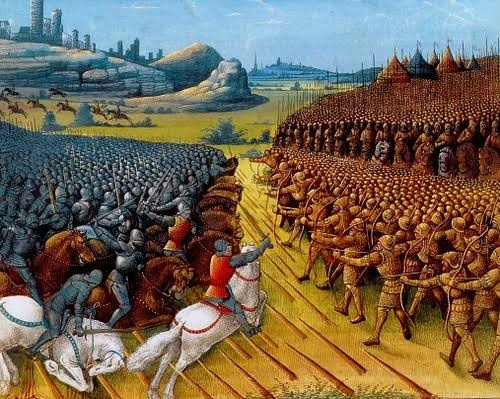

.jpg)
Both Georgian and Islamic sources testify that on the complaints of the Muslim merchants of – Tbilisi, Ganja and Dmanisi – Sultan Mahmud II of Baghdad (r. 1118–1131) sent an expedition into Georgia under command of Ilghazi ibn Artuq of Mardin, whose hegemony in the Middle East and authority among the Muslims was indisputable. After pillaging the County of Edessa and defeat of Roger of Antioch at the battle of Ager Sanguinis in 1119, the reputation of Ilghazi as a great military commander and champion of Muslims against Christians spread far and wide. After this victory Ilghazi made a truce with the Crusaders and went north towards Armenia at the invitation of the sultan's brother Toghrul, ruler of Arran. There he joined a Muslim coalition against Christian Georgians and lead the coalition's army,[24][page needed] in which his vassal Tughan-Arslan lord of Arzen, Bidlis and Dvin, the Mazyadid Dubays b. Sadaqa of Al Hillah, Toghrul and Nakhichevan, with his atabeg Kun-Toghdi, all took part.
On the other side, the Georgians were facing a significantly superior foe in terms of numbers, but had the strategic as well as tactical advantage. The Georgians were well aware of the Muslim preparations and took necessary precautions. In 1118, after successful completion of David IV's military reform, a royal guard and a household force known as 'mona-spa', a royal servant host made up of mercenaries and lower nobility was formed. The Georgian army of 56,000 men included 500 Alans, about 200 Franks, and 15,000 Kipchaks. The smallest formations would be equivalents of today's platoons "group of 20" (ოცეული), then a "group of 100" (ასეული) and so forth all led by servants of higher status and different rank. The core component of David's army was the so called mona-spa, or servant host, the personal retinue of the king, which consisted of 5,000 well-trained and heavily armored mounted warriors with lances and bows. They were used as shock cavalry together with the nobility. The Crusaders, the Kipchak cavalry, and a small portion of infantry were deployed in the center of the Georgian army around the king's banner while the rest were equally split in two major wings initially out of sight for the Seljuqs. Each formation was headed by a great and dense line of horsemen. The heavy cavalry would smash into the enemy ranks with their lances, joined by the infantry which would entangle the Seljuq main body in fights while the cavalry was to regroup and carry out repeated attacks till the enemy broke. At the sign of collapse, David would then send forward his Kipchak cavalry. Initially the king and all his entourage stayed in the center but would immediately switch to their respective positions when the battle commenced. During battle, David IV would assume command over his army's left wing, while Demetrius was leading the right. According to the French knight and historian Walter the Chancellor, before heading off to battle, King David inspired his army with these words: “Soldiers of Christ! If we fight bravely for our Faith, we will defeat not only the devil’s servants, but the devil himself. We will gain the greatest weapon of spiritual warfare when we make a covenant with the Almighty God and vow that we would rather die for His love than escape from the enemy. And if any one of us should wish to retreat, let us take branches and block the entrance to the gorge to prevent this. When the enemy approaches, let us attack fiercely!”